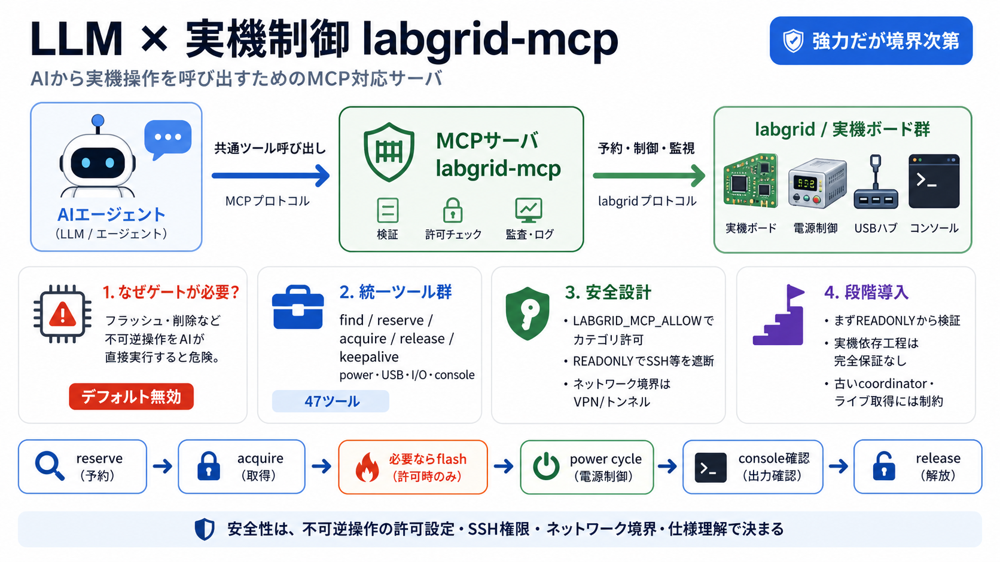

Getting Started — labgrid 24.0 documentation
Attention Labgrid requires your user to be able to connect from the client machine via ssh to the exporter machine \_wi…

AIエージェントからlabgridの実機操作を呼び出せる、MCP対応サーバの整理です。
物理装置は、書き込みや削除などの不可逆操作を含むため、AIが“何でも実行”できる状態は危険です。
labgrid-mcpはMCPサーバとして、AIエージェントやツールからlabgridの“実機操作”を呼び出します。
labgridの主要機能を“統一ツール群”として提供し、予約・制御・監視までを一貫させます。
AIがボードを獲得し、画像を書き込み、電源サイクルし、ログがlogin promptに到達するか確認する…といった流れを実行します。
フラッシュやplace削除は、デフォルトではオフで、LABGRID_MCP_ALLOWでカテゴリを明示した場合のみ有効化されます。
SSHは“取得したボード上で任意コマンド実行”に相当するため、信頼境界が高い操作として扱われます。
共有リソースの“途中保留（hold）期限切れ”を抑えるために、acquire/releaseとkeepaliveが重要な設計意図として読み取れます。
uvx起動やLG_*環境変数、クライアントごとのconfig位置やキー差などが整理されており、導入摩擦を下げる方向性が示されています。
古いcoordinator非対応、イベントストリームなし、ライブ取得には前提（gstreamer/物理USB）が必要など、動作範囲に制約があります。
フラッシュのジョブ機構はCIテストされる一方、シリコンに触れる工程は実機依存で完全保証されません。
coordinator側はplace所有のガードをメタデータには強制しない可能性があり、サーバは“取得中でforce=Trueでない限り”拒否する設計です。
labgrid-mcpは“実機を扱うAI”に現実的な統合面を提供しますが、ネットワーク境界と不可逆許可設定、仕様理解が安全性の成否を左右します。
最初は読み取り中心で検証し、不可逆カテゴリ（LABGRID_MCP_ALLOW）とSSH権限を段階的に引き上げる運用が適します。
Attention Labgrid requires your user to be able to connect from the client machine via ssh to the exporter machine \_wi…
Never forward tokens through your MCP server to backend services. Validate tokens directly with the authorization server…
GPG key ID: B5690EEEBB952194 Verified Learn about vigilant mode. # New Features in 24.0 [...] This is a breaking chan…
This is a breaking change. Version 25.0 exporters / coordinators / clients can not communicate with Version 24.0 and ear…
The following sections describe the responsibilities of each component. See Remote Access for usage information. ### Co…